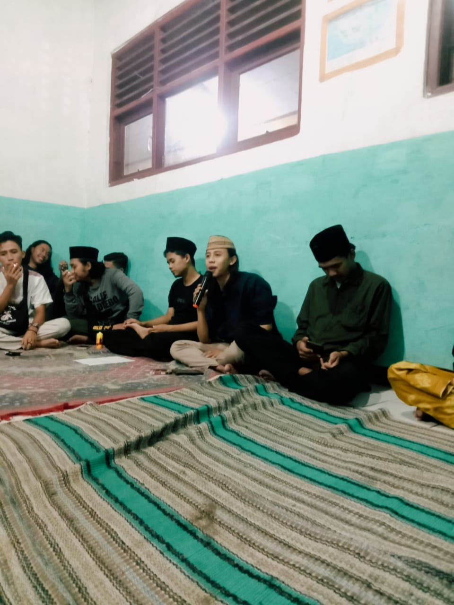

Hai ...
Sudah kenal Sama orang ini
Yuk Kita lihat Seperti apa hidupnya !
Yuk Kita lihat Seperti apa hidupnya !
BangHer , Remaja kelahiran Depok . Nama aslinya yaitu Heri Budiyana Kelahiran Tahun 1999 , dia juga sering di panggil dengan sebutan lain ... ada beberapa nama Panggilan untuknya Antara Lain : Chodet (karna pada beberapa tahun yang lalu dia memiliki chodet di alisnya karna bentrok dengan sekelompok Orang yang tak di kenal pada Waktu itu) . Gondrong Gila (Karna kegilaannya bersama teman - temannya dan seringkalo bertingkah aneh kocak dan lucu dia di panggil gondrong gila) "Yaa gua sii bodo amat ya di panggil gondrong gila kek apa kek , merasa senang-senang aja gitu karna gua lebih baik di panggil kaya gitu daripada di puji ,,, gua takut sama pujian orang ntar jadi somong gua" , Khirid (adalah panggilan ketika ia berhasil merehabilitasi temannya yang terjerat narkoba) dan Mendirikan Majlis Dzikir Arrehab , Menjadikan rumah sebagai markasnya demi kebaikan dan kesembuhan kawannya . Bib 'ain (karna pembacaan maulid yang fasih serta enak di dengar di telinga , ia mendapat panggilan tersebut dari beberapa pemuda - pemudi majlis ta'lim sekitarnya) dan masih banyak lagi panggilan ia yang tidak di ketahui banyak orang
Bukan hanya Minuman Keras Bangher juga pernah terjerumus di jalan hitam , pernah memakai narkoba dan barang terlarang lainnya . Hidup di dunia Malam Sebagai Joki Balap Liar hingga mengalami kecelakaan yang membuatnya kapok "Gua dari sore ngaji sampe jam 10 malem , nah dari jam 10 gua prepare dah buat persiapan malem ini gua balapan , gua di bengkel sampe jam 11 atau lebih baru gua berangkat ke tempat trek-trekan" (Kata Bangher)
Setelah ia mengalami kecelakaan di jalan baru ia berhenti dan tidak ada lagi di dunia malam "pokoknya udah gamau lagi gua jadi joki , itu gua pake atribut lengkap kalo ga wahh jadi bubur gua , dan Alhamdulillah Allah masih kasih kesempatan gua hidup , kalo ga ... wah abis gua di goreng malaikat" (Bangher)
"jangan ngebantah omongan orang tua , apalagi melanggar , gua udah ngerasain , emak gua kaga ridho gua jadi pembalap dan gua masih melanggar dan akhirnya jatoh juga gua"
"yaa makanya sekarang kalo liat orang baru bandel dalem hati gua berkata "yahh tong lu baru nyebur gua udah kering duluan" yaa yang udah mah udah sekarang mau ngapain sii udah malu udah tua"
Setelah Insyaf Pemuda satu ini fokus mengaji dan belajar tentang ilmu agama , baik itu Al-qur'an , Fiqih dan lain-lain sehingga sempat menjadi guru pada tahun 2016
dan dia menjadi pemuda yang di tuakan di kalangannya pada masa itu
"ya gua izin sama guru gua mau belajar ngajar ,, kata guru gua silahkan yaudah gua nurut aja" (Bangher) . "baca maulid pun kadang gw ga di bayar ya ga masalah .. toh gua cinta sama nabi gua , dan perjuangan gua belum ada apa-apanya sama beliau" (Lanjut Bangher)
Bukan hanya itu , bangher juga pernah bekerja sebagai leader operasional di salah satu PT. hingga dia resign dan sekarang dia membuka bisnis sendiri yang bergerak di bidang penjualan Sparepart Motor , Fashion Wanita , barang thrift , dan Kuliner
 "yaa gua juga karna gua Hobby ngomong , Hobby nyanyi dan suka ngomong di depan orang , itu si yang Mendorong gua"
"yaa gua juga karna gua Hobby ngomong , Hobby nyanyi dan suka ngomong di depan orang , itu si yang Mendorong gua"
"Gua pengen kebaikan gua terus di kenang dan di inget sama orang ... gua juga kadang mendadak jadi mentor atau motivator atau yaa kaya orang yang nyemangatin dan ngasih tau supaya kehidupannya lebih maju ... apalagi kalo udah punya keluaraga , aduuhh ga tega gua" (Bangher)
 "Yang punya usaha kecil boleh kita sharing , yuk kita majuin usahanya bareng-bareng ... kalo buat temen buat sahabat gua mah gratis gua kasih tau tips trik dan lain-lain ... Tapi kalo buat orang menengah ke atas wahhh kaga bisa gua kasih gratis ... bahkan di PT pun yang nanya cara ga akan gua kasih mau di bayar berapapun .. apalagu gua tau PT itu ga beres" (Bangher)
"Biarin hidup guamah begini dulu ... yang penting mereka dah , guamah masih bujang insya Allah kalo mereka seneng dan maju , mereka bakal inget sama gua , dan ketika gua susah , gua bakal di tolong"
dia juga sempat bergerak di dunia Entertanment , dengan bakatnya bermain gitar serta logat Betawinya yang lucu dia sempat bisa merubah suasana yang hening menjadi penuh keramaian
"Gua sempet dapet tawaran buat main di kontennya @tawalahtawalah , gua di telpon sama teamnya namanya bang Nagieb kalo ga salah , di tahun 2018 itu sedangkan waktu itu gua masih kerja libur seminggu sekali , udah gitu jauh bat di jatibening bekasi ,,, mungkin kalo sekarang ya gua terima hahaha"
"Sempet dapet tawaran juga jadi gitaris sama vocalisnya Fourtwenty ... udah sempet ngeband bareng , tapi ya gua ga serius udah bilang gua sama mereka"